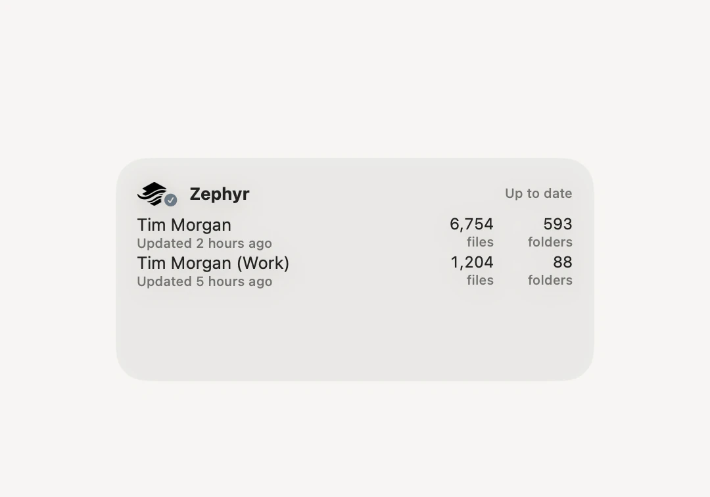
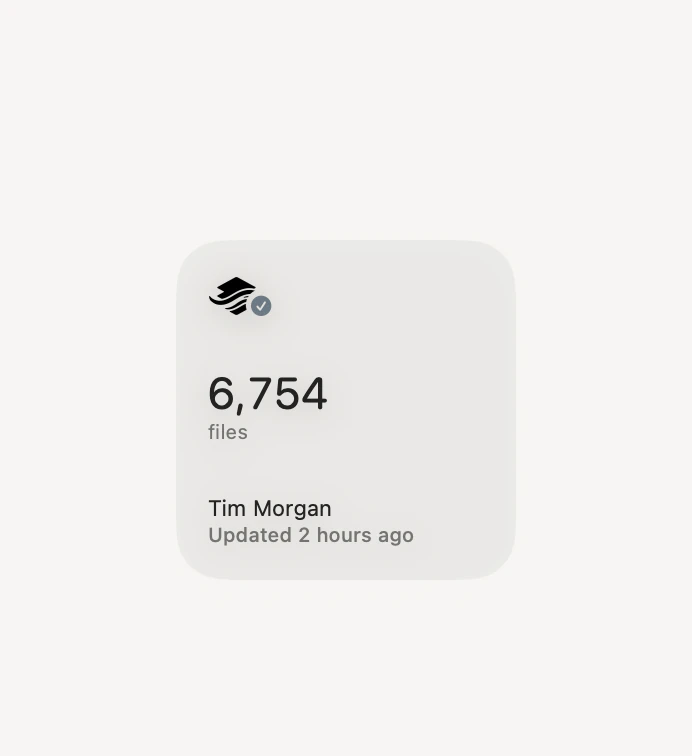

Das Widget „Synchronisierungsstatus“ von Zephyr zeigt die Dateianzahlen jedes verknüpften Kontos und alles, was nicht synchronisiert werden konnte, sodass du den Stand der Dinge siehst, ohne in der Menüleiste zu klicken.

Klicke bei gedrückter Taste „ctrl“ auf den Schreibtisch und wähle „Widgets bearbeiten“.
Suche Zephyr in der Liste links.
Wähle eine Größe und ziehe das Widget dorthin, wo du es haben möchtest.
Die kleine Größe zeigt ein Konto. Die mittlere Größe zeigt mehrere.

Das Widget liest eine Zusammenfassung, die Zephyr beim Synchronisieren veröffentlicht. Es hat also nichts anzuzeigen, bis Zephyr mindestens einmal mit einem verknüpften Konto gelaufen ist. Öffne Zephyr, dann füllt sich das Widget.

Hinweis: Das Widget richtet sich nach Zephyr, nicht direkt nach Dropbox. Solange Zephyr nicht läuft, bleiben die Zahlen auf dem Stand, den es zuletzt veröffentlicht hat.